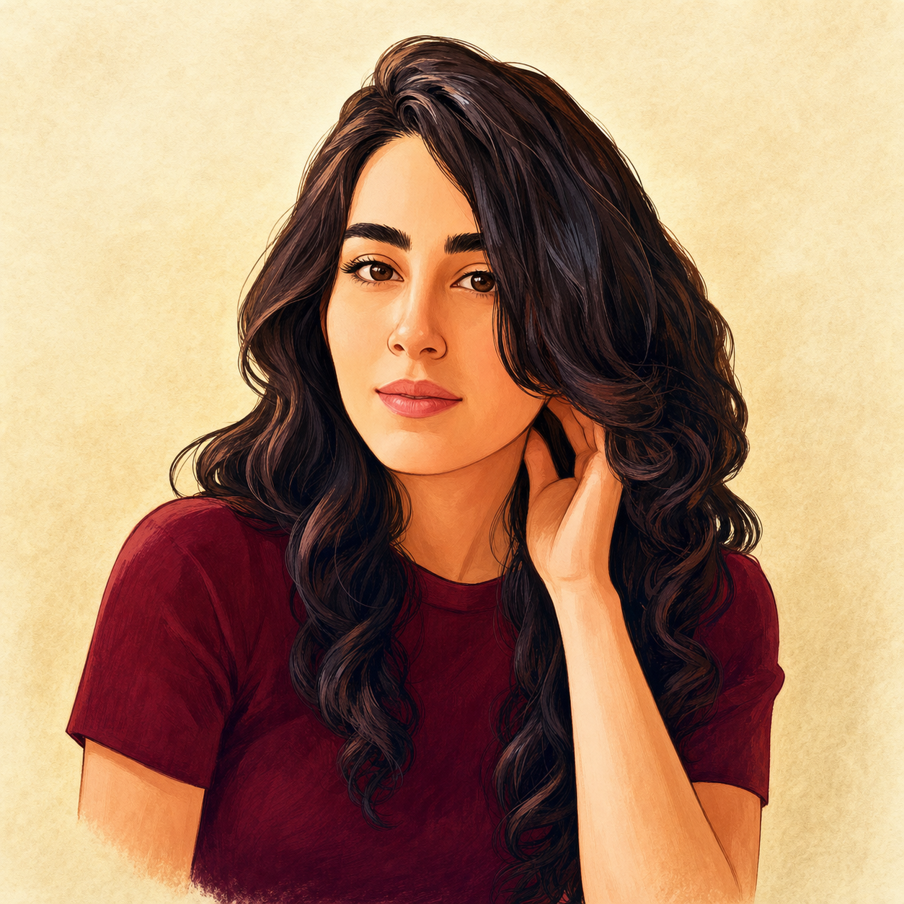
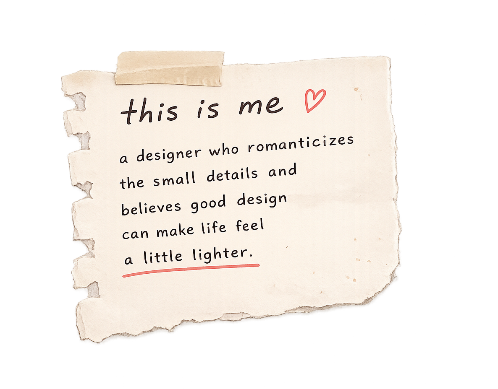
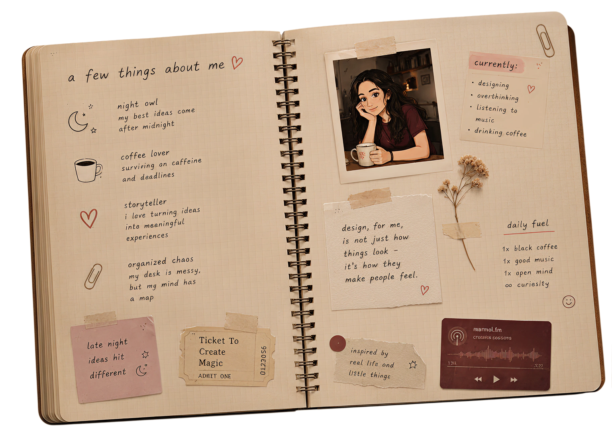
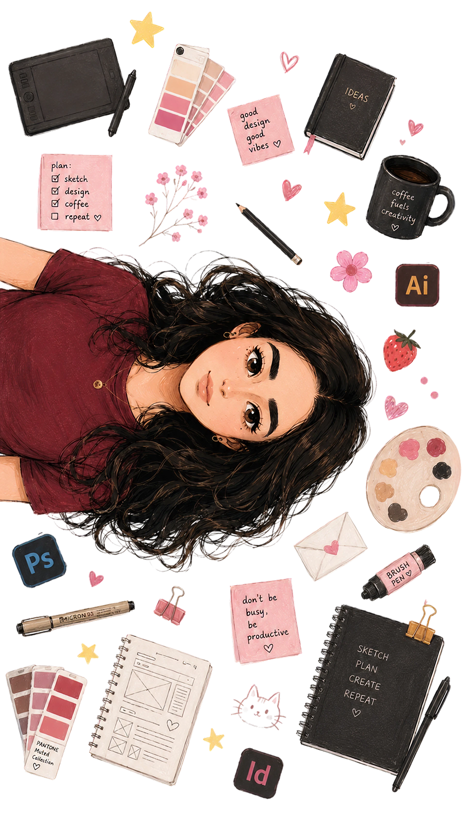

Mara Melkonyan · UX/UI + Graphic Designer


Mara Melkonyan · UX/UI + Graphic Designer

tiny interactions matter
little things i love ♥


Photo wall
A cinematic scrapbook of saved fragments, half-remembered places, and soft little feelings.
this cafe smelled like cinnamon
almost deleted this one
kept this because the light felt honest.
the kind of quiet that makes everything softer.
somewhere between a deadline and a daydream.
tiny moments that stayed